One plan, several family members, and rules behind every benefit.
Each plan has its own benefits, covered members, balances and limits, and each partner configures them differently.
Members could find their plan,
but the information needed to use a benefit was spread across multiple screens.
Plan details, benefits, coverage rules and services each sat on a different screen.
Each screen held only part of the answer.
Six screens, from Home to Usage Summary.
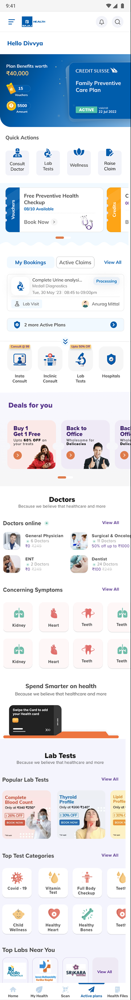
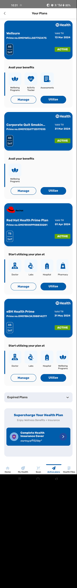
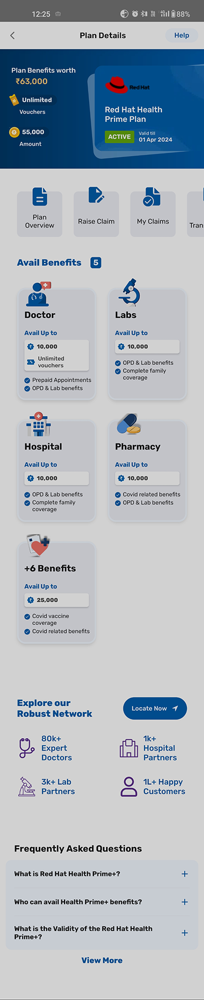
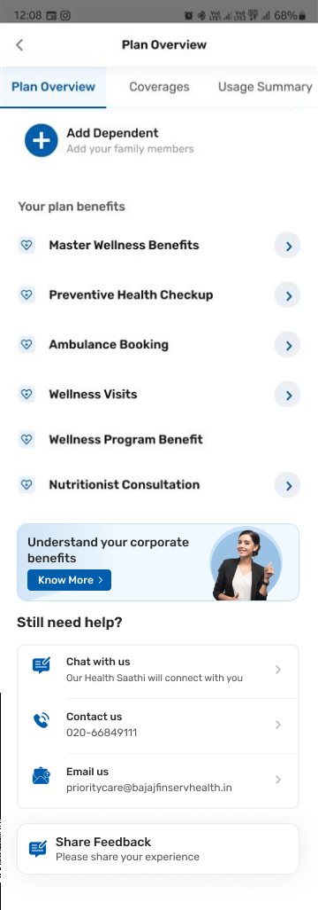
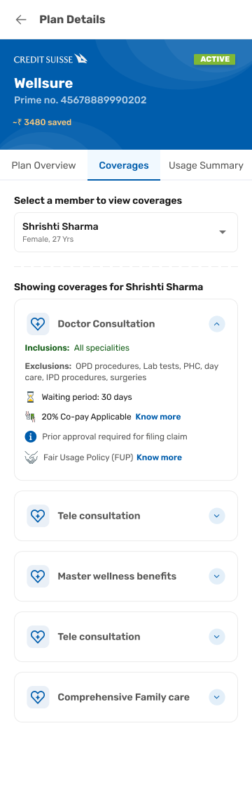
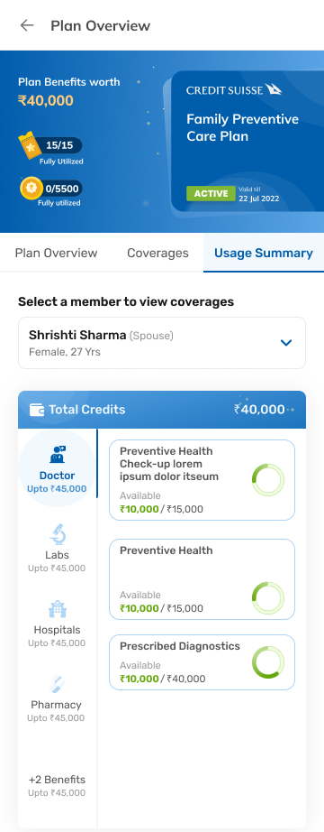
Before · Home
Each screen held only part of the answer.
Six screens, from Home to Usage Summary.
- 01 / 06HomePlan among other health content.
- 02 / 06Your PlansSelect a plan.
- 03 / 06Plan detailsBenefit amounts and tiles.
- 04 / 06Plan OverviewList of included benefits.
- 05 / 06CoveragesEligibility and coverage rules.
- 06 / 06Usage SummaryBalance for each member.
No screen holds more than two of the six answers.
- 01HomePlan among other health content.
- 02Your PlansSelect a plan.
- 03Plan detailsBenefit amounts and tiles.
- 04Plan OverviewList of included benefits.
- 05CoveragesEligibility and coverage rules.
- 06Usage SummaryBalance for each member.
No screen holds more than two of the six answers.
The amount was visible. The conditions weren't.
The original benefit tiles showed limits and included services, but left three important questions unanswered.
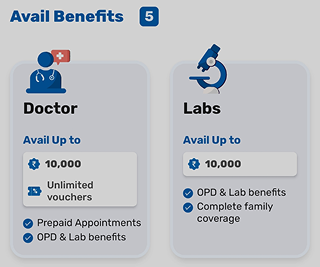
- 01Member
Who on the plan could use the benefit?
- 02Balance
Did the amount represent rupees, vouchers, or both?
- 03Availability
Could the benefit be used immediately, or was it exhausted, waiting or blocked?
Finding a benefit is not the same as being able to use it.
A benefit is only usable when all four are answered.
- 01Plan
Is the benefit on this policy?
- 02Member
Is this person covered for it?
- 03Balance
How much is left, in rupees or visits?
- 04Policy state
Active, waiting, paused, blocked or exhausted?
Then a member can book with the plan, pay & book where the PRD allows it, or see why not.
Who it affects
Members
Cover they already have goes unused, or costs them unexpectedly.
Employers and partners
The plan they pay for delivers less than it could.
Bajaj Finserv Health
Fewer bookings through the plan, and more support questions.
My reasoning from the screens and the PRD, not measured outcomes.
Five decisions shaped the redesign.
Making benefits easier to find, understand and use.
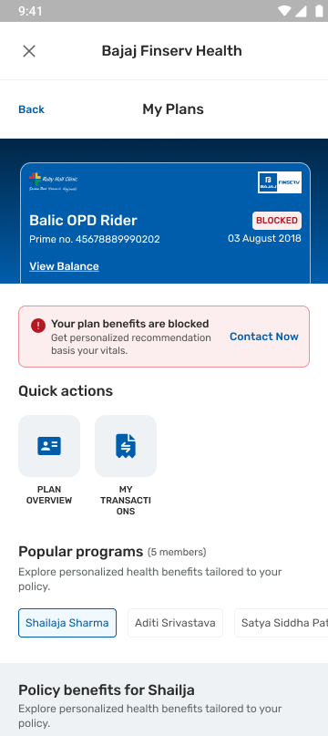
Start with the plan
Keep plan details, members and actions together.
Turning product requirements into a simpler benefits experience.
I mapped the existing journeys, identified what members needed to know, and reorganised the experience around those decisions.
Map the existing experience
Mapped the original doctor and lab booking journeys in Figma.
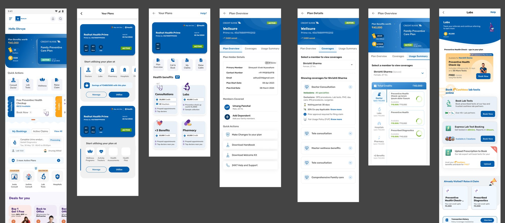
Translate requirements into structure
Turned the PRD's rules into decisions about what each screen shows.
- Which planSeveral plans and partners→
The plan card comes first in My Plans
- Which memberOpen to one member, not another→
A member row sets whose benefits are shown
- Which walletMaster, fungible or additive→
Money and counts kept apart
- Which stateExhausted, expired, waiting, paused, blocked, locked→
Each state explains itself and the allowed next step
- Partner configurationPlacement, text and icons→
One section pattern that holds for every plan
Design the new experience
My Plans for finding and using benefits. Usage Summary for balances and coverage.
What I changed in the redesign.
One member, from opening their plan to reaching a service.
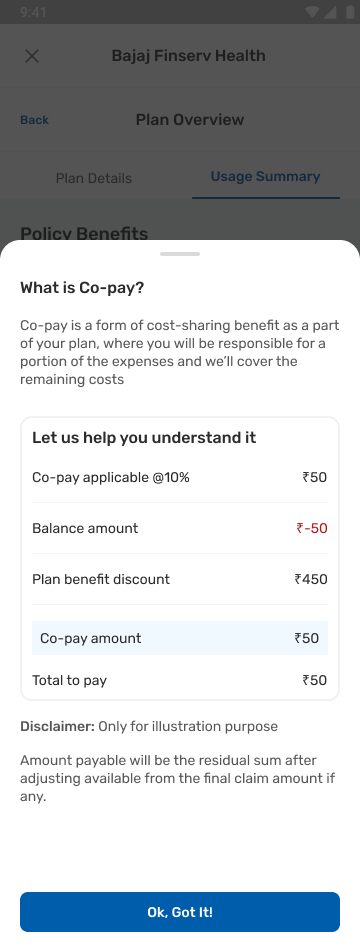
After · My Plans
- 06.1My Plans
The member opens their plan.
My Plans starts with the plan card: policy, validity, status and View Balance.
- 06.1My Plans
They choose who it's for.
The primary member is selected by default. Choosing another updates the benefits below.
- 06.2Benefit categories
They find the benefit.
Benefits sit under Health, Fitness and Wellness, each with one line on what it covers.
Placement configurable per partner (PRD)
- 06.2Benefit categories
They pick how to use it.
Benefits with sub-types ask one question first, here insta or tele-consultation.
- 06.3Usage Summary
They see what's left.
Each benefit shows its balance against its limit, with the master wallet and the benefits under it.
PRD renames it Benefits Summary
- 06.3Usage Summary
They check who's covered.
The benefit sheet lists eligible members and the limit, then inclusions and exclusions.
Empty attributes hidden (PRD)
- 06.3Usage Summary
They see what they'll pay.
The co-pay sheet works through what the plan pays and what the member pays.
- 06.4Service entry
They continue to the service.
Lab tests ask how to book. The selected member carries into the booking.
Member carry-through: PRD requirement
Explained each policy state and the next step.
Waiting, blocked, paused and exhausted plans each get their own message instead of a greyed-out benefit.
Shipped: to confirm
- Lab booking methodUpload a prescription, book a test or call.
- Waiting periodSays when benefits start.
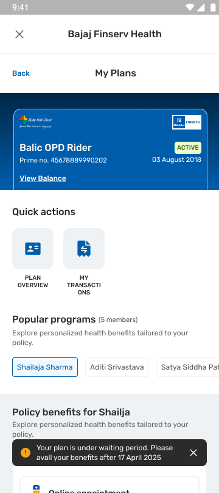
- BlockedStatus on the card; Contact Now in the banner.
- PausedAsks for the pending documents.
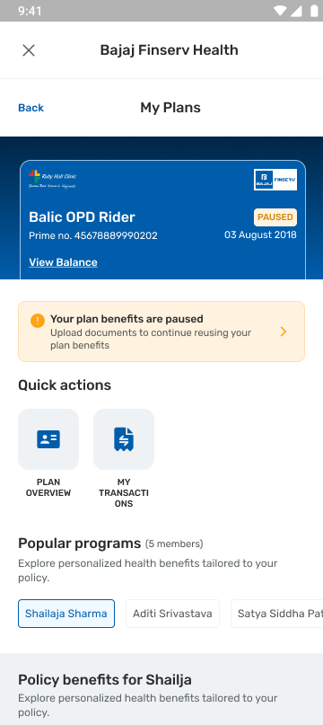
- ExhaustedSays the balance is used up.
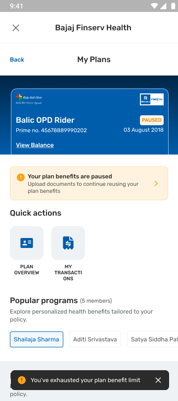
| State | Behaviour in the PRD | In the designs |
|---|---|---|
| Waiting period | Says when benefits open | Designed |
| Blocked | No benefits or claims until it changes | Designed |
| Paused | Upload documents; Pay & Book | Designed |
| Exhausted | Pay & Book where allowed | Designed |
| Expired | Pay & Book; claim in grace period | Requirement only |
| Locked | Shown with value and unlock route | Requirement only |
Comparing the old and redesigned experience.
Five screens side by side, then the full route before and after.
Plan card, actions and members replace deals and content.
People opening benefits want their plan.
Actions from plan inclusions; primary member by default.
Names become described benefits, grouped by type.
One line answers "what is this?" without a tap.
Configurable placement; CMS text and icons.
Rings give way to exact amounts and a master wallet.
Figures read faster than rings; "unlimited" stays a count.
Every benefit listed; Rewards only when included.
Rules move from a tab into a sheet on the benefit.
Read at the moment of deciding.
Fair usage first; empty attributes hidden.
A Doctor tile becomes one question: insta or tele.
Choose how to consult before entering the service.
Sub-type drawer; member carried into the service.
The old doctor route: six screens.
The mapped flow, cropped to the top of each screen.
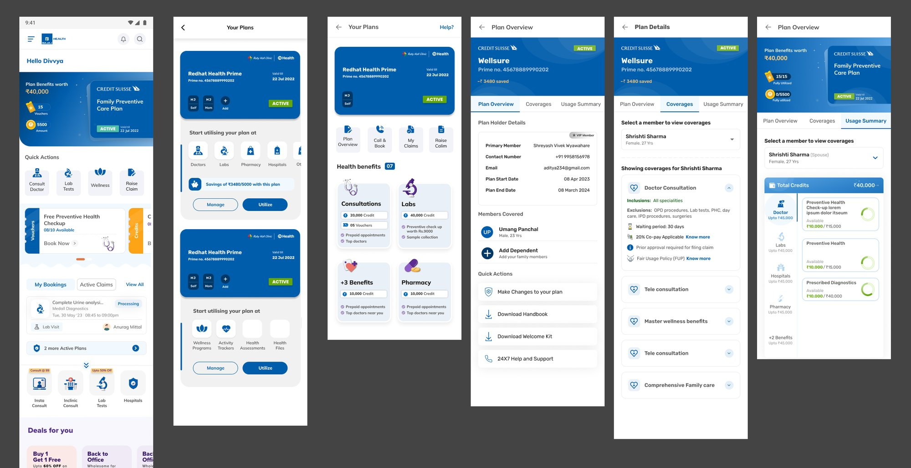
The redesigned route, from plan to service.
My Plans, then a benefit, its coverage, the consultation type and the service.
- 01
View Balance on the plan card
- 02
Member selection sets the balances
- 03
Limits per eligible member
- 04
Cashless benefits apply
- 05Doctor booking screen not supplied
Right member, right wallet (PRD)
Early client feedback favoured the redesigned experience.
Client feedback · qualitative
All new corporate clients who had previously used the older layout preferred the redesigned experience.
What I'd measure next
Proposed measures, not results. Post-launch data isn't available yet.
- Benefit-to-booking conversion
- Benefits selected through to confirmed bookings.
- Eligibility-related errors
- Bookings affected by incorrect member or coverage selection.
- Benefit support requests
- Queries about balances, coverage and unavailable benefits.
- Wallet-paid bookings
- Bookings paid using plan benefits versus out-of-pocket payments.
What I learned.
A balance needs its conditions
₹10,000 left means little until you know who it covers and what it covers.
Show detail when it's needed
The old screens had the right information. Moving it next to the decision mattered more than adding to it.
Keep the member and policy in view
The selected member and policy state have to carry through every screen, up to the booking.
Design one structure for many plans
Partners configure benefits differently. A fixed plan card, member row and section pattern keeps every plan readable.
Unlock more benefits with document verification.
Some additional benefits become available once members submit the required documents and complete verification. This helps members access benefits they may not have been able to use earlier.
- 01Discover
My Plans lists the benefits that can be unlocked, each with its wallet amount and an Unlock action.
Locked - 02Submit documents
The unlock drawer explains how to unlock, the amount it releases, and the documents that benefit needs.
Documents required - 03Verification
A confirmation and a timeline track the request while the documents are reviewed.
Under verification - 04Unlocked
Once approved, the benefit appears at the top of its Health, Fitness or Wellness section with its balance.
LockedAvailable
- Requirements differ
- Each benefit lists its own documents. A shared wallet is unlocked as a whole by one set of documents.
- One request per document type
- Benefits needing the same document are verified together and approved or rejected together.
- Not yet unlocked
- Benefits awaiting verification stay locked. Deficient or rejected requests show their status and allow a re-upload.
From the PRD (Unlock Benefits via Document Upload). Screens for this journey aren't in the supplied designs.